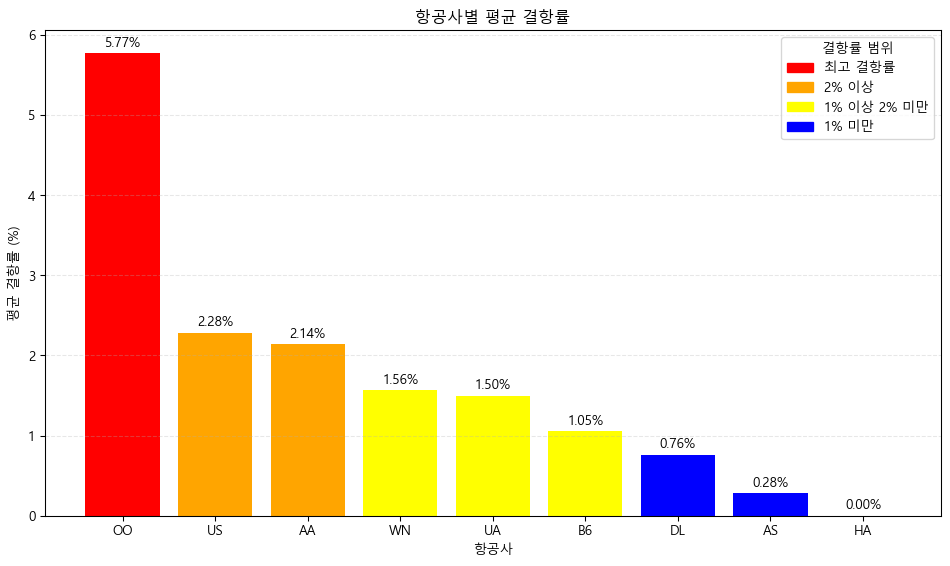
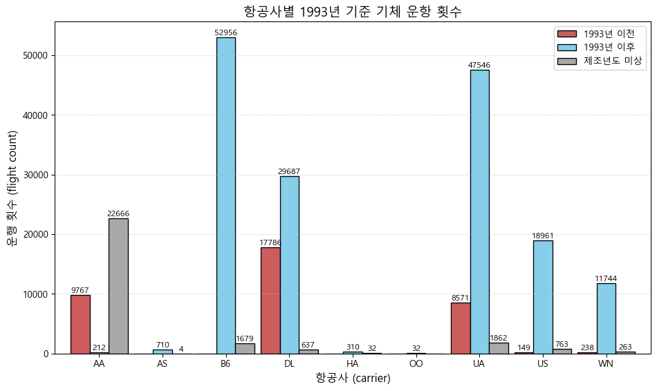

| classify_delay | origin | carrier | 10분 이상 일찍 출발 | 10분~1시간 출발지연 | 1시간 이상 출발지연 | 정시 또는 ±10분 |
|---|---|---|---|---|---|---|
| 0 | EWR | AA | 5.86 | 12.99 | 7.20 | 73.95 |
| 1 | EWR | AS | 12.13 | 11.71 | 5.50 | 70.66 |
| 2 | EWR | B6 | 11.62 | 15.81 | 9.36 | 63.21 |
| 3 | EWR | DL | 1.89 | 13.48 | 7.50 | 77.14 |
| 4 | EWR | OO | 0.00 | 16.67 | 16.67 | 66.67 |
| 5 | EWR | UA | 0.86 | 21.49 | 6.62 | 71.02 |
| 6 | EWR | US | 3.68 | 9.85 | 4.07 | 82.41 |
| 7 | EWR | WN | 0.18 | 24.39 | 9.36 | 66.07 |
| 8 | JFK | AA | 1.26 | 13.91 | 6.93 | 77.89 |
| 9 | JFK | B6 | 2.21 | 19.73 | 8.20 | 69.86 |
| 10 | JFK | DL | 0.88 | 15.59 | 4.84 | 78.69 |
| 11 | JFK | HA | 9.06 | 5.26 | 3.22 | 82.46 |
| 12 | JFK | UA | 3.19 | 13.00 | 5.72 | 78.09 |
| 13 | JFK | US | 2.67 | 12.35 | 4.01 | 80.97 |
| 14 | LGA | AA | 6.38 | 12.20 | 5.59 | 75.83 |
| 15 | LGA | B6 | 13.89 | 17.53 | 10.29 | 58.30 |
| 16 | LGA | DL | 2.55 | 14.16 | 6.00 | 77.30 |
| 17 | LGA | OO | 26.09 | 8.70 | 13.04 | 52.17 |
| 18 | LGA | UA | 4.88 | 15.22 | 7.50 | 72.40 |
| 19 | LGA | US | 6.19 | 11.54 | 3.80 | 78.47 |
| 20 | LGA | WN | 0.32 | 24.52 | 8.52 | 66.65 |
2013년 항공사 투자 모델 분석
목차
- 주제
- 분석내용
- 활용 데이터
- 타당성 검증(15년 지표비교)
1. 주제
- 2013년 기준, 뉴욕 공항 이용 데이터를 활용하여 기업 가치 / 성장가능성을 분석
- 2년후(2015년)의 시가총액과 비교하여 데이터 분석의 정확성과 타당성 검증
2. 분석내용
- 총 9개사에 한해서만 분석 진행
- 고객선호도 (출발지연률, 도착지연률, 결항률)
- 노후화항공기 운행률
- 항공사의 운영효율성 측정을 위한 항공기 활용률
총 4가지 기준을 바탕으로 기업 가치/성장가능성 분석
3. 활용 데이터
분석1: 고객선호도
- 출발지연률, 도착지연률, 결항률 세가지를 고객선호도 수치로 활용
(1) 출발지연률
- 지연률 = 지연된 항공편 수/전체 항공편 수) * 100
공항별 정시출발률
- 공항별 차이가 크지 않음.
- 공항별 지연률에 대한 영향이 크지 않음을 알 수 있음.

항공사별 출발지연률

(2) 도착지연률
| classify_delay | 10분~1시간 지연 | 1시간 이상 지연 | 빠른 도착 및 정시 도착(10분 이내) | |
|---|---|---|---|---|
| origin | carrier | |||
| EWR | AA | 15.79 | 7.17 | 77.04 |
| AS | 14.39 | 4.65 | 80.96 | |
| B6 | 19.10 | 9.84 | 71.06 | |
| DL | 18.37 | 7.80 | 73.83 | |
| OO | 16.67 | 16.67 | 66.67 | |
| UA | 20.49 | 6.75 | 72.77 | |
| US | 18.35 | 4.37 | 77.28 | |
| WN | 22.11 | 9.49 | 68.39 | |
| JFK | AA | 17.81 | 7.34 | 74.85 |
| B6 | 22.48 | 9.02 | 68.49 | |
| DL | 15.51 | 5.50 | 78.99 | |
| HA | 16.67 | 2.34 | 80.99 | |
| UA | 19.23 | 7.21 | 73.56 | |
| US | 19.77 | 4.89 | 75.34 | |
| LGA | AA | 15.97 | 5.85 | 78.18 |
| B6 | 24.24 | 11.30 | 64.46 | |
| DL | 18.03 | 6.63 | 75.35 | |
| OO | 8.70 | 13.04 | 78.26 | |
| UA | 18.56 | 7.87 | 73.57 | |
| US | 18.45 | 5.03 | 76.52 | |
| WN | 21.29 | 8.57 | 70.14 |
공항별 정시도착률
- 공항별 차이가 크지 않음.
- 공항별 지연률에 대한 영향이 크지 않음을 알 수 있음.
항공사별 도착지연률

(3) 결항률
| carrier | AA | AS | B6 | DL | HA | OO | UA | US | WN |
|---|---|---|---|---|---|---|---|---|---|
| origin | |||||||||
| EWR | 2.839117 | 0.280112 | 1.128565 | 0.898204 | NaN | 0.000000 | 0.943867 | 1.702611 | 1.696833 |
| JFK | 1.022999 | NaN | 0.748645 | 0.483068 | 0.0 | NaN | 0.970446 | 0.868114 | NaN |
| LGA | 2.561615 | NaN | 1.282906 | 0.910391 | NaN | 11.538462 | 2.573347 | 4.278319 | 1.429276 |
항공사별 평균 결항률
분석2: 투자 Risk-노후화 항공기
- 제조년 20년(1993년) 이상된 항공기는 ‘노후화’ 된 것으로 규정
항공사별 노후화 항공기 운행률
| class | after_1993 | before_1993 | unknown | after% | before% | unknown% |
|---|---|---|---|---|---|---|
| carrier | ||||||
| AA | 212 | 9767 | 22666 | 0.65 | 29.92 | 69.43 |
| AS | 710 | 0 | 4 | 99.44 | 0.00 | 0.56 |
| B6 | 52956 | 0 | 1679 | 96.93 | 0.00 | 3.07 |
| DL | 29687 | 17786 | 637 | 61.71 | 36.97 | 1.32 |
| HA | 310 | 0 | 32 | 90.64 | 0.00 | 9.36 |
| OO | 32 | 0 | 0 | 100.00 | 0.00 | 0.00 |
| UA | 47546 | 8571 | 1862 | 82.01 | 14.78 | 3.21 |
| US | 18961 | 149 | 763 | 95.41 | 0.75 | 3.84 |
| WN | 11744 | 238 | 263 | 95.91 | 1.94 | 2.15 |
각 항공사별 노후화 항공기 총 운항 횟수
각 항공사별 노후화 항공기 점유율

분석3: 항공사별 항공기 활용률
- 항공사의 운영효율성 측정을 위해 ’각 항공기별 하루평균 운항시간’을 검토
- 항공기 활용률 및 가동률이 높을수록 고정비 대비 운항수익 증가
- 동일자산 대비 매출효율(ROA) 증가로, 하루평균 운항시간이 높을 수록 고효율
각 항공기별 하루평균 운항시간
| carrier | avg_airtime | |
|---|---|---|
| 0 | HA | 10.389922 |
| 1 | AS | 5.413147 |
| 2 | UA | 3.976652 |
| 3 | B6 | 3.941019 |
| 4 | AA | 3.473681 |
| 5 | DL | 3.114574 |
| 6 | WN | 2.501227 |
| 7 | US | 2.345811 |
| 8 | OO | 1.354808 |
항공사별 항공기 운항률
13년 대비 15년 지표 비교
2013년 분석결과와 2016년 시가 총액을 기준으로 실제 데이터 지표를 비교하여, 항공사별 성장률 및 예측 비교모델 신뢰성 검증
최적투자항공사 모델 선정
기타참고: 항공사의 운항점유율
carrier
AA 14.41
AS 0.32
B6 24.11
DL 21.23
HA 0.15
OO 0.01
UA 25.59
US 8.77
WN 5.40
Name: occ%, dtype: float64